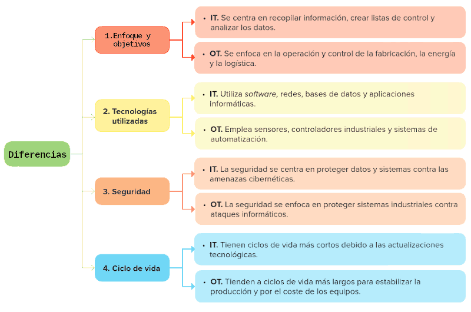

Els entorns IT i OT són dues àrees diferents de la tecnologia empresarial, que tenen objectius i enfocaments diferents, però que també es complementen per a millorar l'eficiència i el rendiment de l'organització.


Digitalització en planta (OT)
L'enfocament operatiu de la digitalització rep el nom de digitalització en planta i es refereix a la integració i aplicació de tecnologies digitals en els processos i les operacions industrials per a millorar l'eficiència operativa, la productivitat i la presa de decisions en l'entorn de fabricació o producció. Els seus principals aspectes són:
- Automatització i control avançat: mitjançant la implementació de sistemes automatitzats per a controlar i monitorar processos en temps real, reduint la dependència de la intervenció humana.
- Sensors IoT: l'ús extensiu de sensors i dispositius connectats per a recopilar dades operatives que permeten la monitorització contínua i l'optimització de processos.
- Bessons digitals: creació de models digitals que repliquen processos i sistemes físics, facilitant la simulació, anàlisi i optimització virtual.
- Realitat augmentada (RA) i realitat virtual (RV): per a millorar la visualització, entrenament d'operadors i la resolució de problemes de forma remota.
- Sistemes de gestió d'actius: permeten la monitorització i el manteniment eficient dels actius físics (maquinària, equipament, infraestructura, etc) al llarg del seu cicle de vida.
Digitalització en negosi (IT)
L'enfocament empresarial rep el nom de digitalització en negosi, referint-se a l'aplicació de tecnologies digitals en funcions i processos relacionats amb la gestió i operació de l'organització. Inclou eines per a la millora d'eficiència en recursos humans, finances, logística i relacions amb els clients. L'objectiu és optimitzar la presa de decisions estratègiques, millorar l'experiència del client i garantir l'eficiència en les operacions comercials. Els seus principals aspectes són:
- Sistemes ERP: implementació de plataformes integrals que unifiquen la gestió de processos empresarials, com finances, recursos humans i logística.
- Analítica avançada i big data: per a l'anàlisi de grans volums de dades.
- Intel·ligència artificial i machine learning: per a automatitzar processos, millorar la personalització i optimitzar operacions.
- Blockchain: aplicació de tecnologies d'emmagatzematge d'informació distribuïda per a garantir la seguretat i la traçabilitat en transaccions comercials i registres.
- Informàtica en el núvol: adopció de serveis que permeten facilitar l'emmagatzematge, processament i accés a dades des de qualsevol lloc.
- IoT: permet la interconnexió de dispositius físics, possibilitant la recopilació i compartició de dades en temps real, facilitant la monitorització i el control remot d'operacions, així com l'obtenció d'informació valuosa per a la presa de decisions.